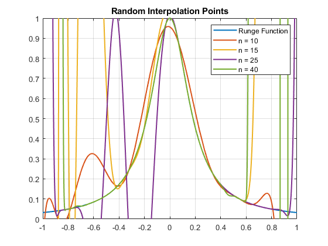

Contents
%----------------------------Question 1------------------------------------ z = 30; m = 2000; x = linspace(-1,1,m)'; f = 1./(1 + (z*x.^2)); figure plot(x,f) title('Runge Function','LineWidth',1.5);
%----------------------------Question 2------------------------------------ % a) Solve interpolation problem with Vandermonde matrix Va = f n = 10; % v = vector of x values, y = f(x) vector z = 30; v = linspace(-1,1,n); y = 1./(1 + (z*v.^2)); y = y'; V = vander(v); a = V\y; %Vandermonde form polynomial p = poly2sym(a); fplot(p,[-1,1],'LineWidth',1.5); grid on title('Vandermonde');
b) Solve interpolation problem with barycentric form
%for plotting m = 2000; x = linspace(-1,1,m)'; z = 30; %interpolation points num = 10; ipts = linspace(-1,1,num); %f(ipts) f = 1./(1 + (z*ipts.^2)); m = size(x,1); w = ones(num,1); for i = 1:num for j = 1:num if i ~= j w(i) = w(i)*(ipts(i) - ipts(j)); end end w(i) = 1/w(i); end numer = zeros(m,1); denom = zeros(m,1); for i = 1:num numer = numer + f(i) * w(i)./(x - ipts(i)); denom = denom + w(i)./(x - ipts(i)); end %Barycentric form of polynomial p = numer./denom; figure plot(x,p,'LineWidth',1.5) grid on title('Barycentric');
c) Solve interpolation problem with divided differences and Newton form
%values of x for plot m = 2000; x = linspace(-1,1,m)'; z = 30; %interpolation points n = 10; ipts = linspace(-1,1,n); %f(ipts) f = 1./(1 + (z*ipts.^2)); %find divided differences F = zeros(n); F(:,1) = f'; for i = 2:n for j = 2:i F(i,j) = (F(i,j-1) - F(i-1,j-1)) / (ipts(i) - ipts(i-j+1)); end end %diagonal values are coeff. in newton's form divDiff = diag(F); %matrix X[] stores products of(x - xi) X = ones(n,m); for k = 2:n X(k,:) = X(k-1,:) .* (x' - ipts(k-1)); end %Newton's form of polynomial p = zeros(1,m); for q = 1:n p = p + divDiff(q) .* X(q,:); end figure plot(x,p,'LineWidth',1.5) grid on title('Newton');
----------------------------Question 3-----------------------------------
%a) equidistant interpolation points n = 10, 15, 25, 40 z = 30; m = 2000; x = linspace(-1,1,m)'; f = 1./(1 + (z*x.^2)); plot(x,f,'DisplayName','Runge Function','LineWidth',1.5) hold on % n = 10, n+1 interpolation points n10 = 11; v10 = linspace(-1,1,n10); y10 = 1./(1 + (z*v10.^2)); y10 = y10'; V10 = vander(v10); a10 = V10\y10; p10 = poly2sym(a10); fplot(p10,[-1,1], 'DisplayName', 'n = 10','LineWidth',1.5); hold on % n = 15, n+1 interpolation points n15 = 16; v15 = linspace(-1,1,n15); y15 = 1./(1 + (z*v15.^2)); y15 = y15'; V15 = vander(v15); a15 = V15\y15; p15 = poly2sym(a15); fplot(p15,[-1,1],'DisplayName', 'n = 15','LineWidth',1.5); hold on % n = 25, n+1 interpolation points n25 = 26; v25 = linspace(-1,1,n25); y25 = 1./(1 + (z*v25.^2)); y25 = y25'; V25 = vander(v25); a25 = V25\y25; p25 = poly2sym(a25); fplot(p25,[-1,1],'DisplayName', 'n = 25','LineWidth',1.5); hold on % n = 40, n+1 interpolation points n40 = 41; v40 = linspace(-1,1,n40); y40 = 1./(1 + (z*v40.^2)); y40 = y40'; V40 = vander(v40); a40 = V40\y40; p40 = poly2sym(a40); fplot(p40,[-1,1],'DisplayName', 'n = 40','LineWidth',1.5); ylim([0 1]) hold on grid on title('Equidistant Interpolation Points'); legend hold off
Warning: Matrix is close to singular or badly scaled. Results may be inaccurate. RCOND = 4.713644e-20.
b) Chebychev interpolation points n = 10, 15, 25, 40
z = 30; m = 2000; x = linspace(-1,1,m)'; f = 1./(1 + (z*x.^2)); plot(x,f,'DisplayName','Runge Function','LineWidth',1.5) hold on % n = 10, n+1 interpolation points n10 = 11; angles10 = linspace(0,pi,n10); v10 = cos(angles10); y10 = 1./(1 + (z*v10.^2)); y10 = y10'; V10 = vander(v10); a10 = V10\y10; p10 = poly2sym(a10); fplot(p10,[-1,1], 'DisplayName', 'n = 10','LineWidth',1.5); hold on % n = 15, n+1 interpolation points n15 = 16; angles15 = linspace(0,pi,n15); v15 = cos(angles15); y15 = 1./(1 + (z*v15.^2)); y15 = y15'; V15 = vander(v15); a15 = V15\y15; p15 = poly2sym(a15); fplot(p15,[-1,1],'DisplayName', 'n = 15','LineWidth',1.5); hold on % n = 25, n+1 interpolation points n25 = 26; angles25 = linspace(0,pi,n25); v25 = cos(angles25); y25 = 1./(1 + (z*v25.^2)); y25 = y25'; V25 = vander(v25); a25 = V25\y25; p25 = poly2sym(a25); fplot(p25,[-1,1],'DisplayName', 'n = 25','LineWidth',1.5); hold on % n = 40, n+1 interpolation points n40 = 41; angles40 = linspace(0,pi,n40); v40 = cos(angles40); y40 = 1./(1 + (z*v40.^2)); y40 = y40'; V40 = vander(v40); a40 = V40\y40; p40 = poly2sym(a40); fplot(p40,[-1,1],'DisplayName', 'n = 40','LineWidth',1.5); ylim([0 1]) hold on grid on title('Chebychev Interpolation Points'); legend hold off
c) random distribution
z = 30; m = 2000; x = linspace(-1,1,m)'; f = 1./(1 + (z*x.^2)); plot(x,f,'DisplayName','Runge Function','LineWidth',1.5) hold on % n = 10, n+1 interpolation points n10 = 11; v10 = -1 + (1+1).*rand(n10, 1); y10 = 1./(1 + (z*v10.^2)); V10 = vander(v10); a10 = V10\y10; p10 = poly2sym(a10); fplot(p10,[-1,1], 'DisplayName', 'n = 10','LineWidth',1.5); hold on % n = 15, n+1 interpolation points n15 = 16; v15 = -1 + (1+1).*rand(n15, 1); y15 = 1./(1 + (z*v15.^2)); V15 = vander(v15); a15 = V15\y15; p15 = poly2sym(a15); fplot(p15,[-1,1],'DisplayName', 'n = 15','LineWidth',1.5); hold on % n = 25, n+1 interpolation points n25 = 26; v25 = -1 + (1+1).*rand(n25, 1); y25 = 1./(1 + (z*v25.^2)); V25 = vander(v25); a25 = V25\y25; p25 = poly2sym(a25); fplot(p25,[-1,1],'DisplayName', 'n = 25','LineWidth',1.5); hold on % n = 40, n+1 interpolation points n40 = 41; v40 = -1 + (1+1).*rand(n40, 1); y40 = 1./(1 + (z*v40.^2)); V40 = vander(v40); a40 = V40\y40; p40 = poly2sym(a40); fplot(p40,[-1,1],'DisplayName', 'n = 40','LineWidth',1.5); ylim([0 1]) hold on grid on title('Random Interpolation Points'); legend hold off
Warning: Matrix is close to singular or badly scaled. Results may be inaccurate. RCOND = 1.001972e-18. Warning: Matrix is close to singular or badly scaled. Results may be inaccurate. RCOND = 5.115692e-25.
c2 cheby x2
% b) Chebychev interpolation points n = 10, 15, 25, 40 z = 30; m = 2000; x = linspace(-1,1,m)'; f = 1./(1 + (z*x.^2)); plot(x,f,'DisplayName','Runge Function','LineWidth',1.5) hold on % n = 10, n+1 interpolation points n10 = 11; angles10 = linspace(0,pi,n10); v10 = cos(angles10).*2; y10 = 1./(1 + (z*v10.*2)); y10 = y10'; V10 = vander(v10); a10 = V10\y10; p10 = poly2sym(a10); fplot(p10,[-1,1], 'DisplayName', 'n = 10','LineWidth',1.5); hold on % n = 15, n+1 interpolation points n15 = 16; angles15 = linspace(0,pi,n15); v15 = cos(angles15).*2; y15 = 1./(1 + (z*v15.^2)); y15 = y15'; V15 = vander(v15); a15 = V15\y15; p15 = poly2sym(a15); fplot(p15,[-1,1],'DisplayName', 'n = 15','LineWidth',1.5); hold on % n = 25, n+1 interpolation points n25 = 26; angles25 = linspace(0,pi,n25); v25 = cos(angles25).*2; y25 = 1./(1 + (z*v25.^2)); y25 = y25'; V25 = vander(v25); a25 = V25\y25; p25 = poly2sym(a25); fplot(p25,[-1,1],'DisplayName', 'n = 25','LineWidth',1.5); hold on % n = 40, n+1 interpolation points n40 = 41; angles40 = linspace(0,pi,n40); v40 = cos(angles40).*2; y40 = 1./(1 + (z*v40.^2)); y40 = y40'; V40 = vander(v40); a40 = V40\y40; p40 = poly2sym(a40); fplot(p40,[-1,1],'DisplayName', 'n = 40','LineWidth',1.5); ylim([0 1]) hold on grid on title('Chebychev*2 Interpolation Points'); legend hold off
Warning: Matrix is close to singular or badly scaled. Results may be inaccurate. RCOND = 1.962026e-20.
----------------------------Question 4------------------------------------
%plot natural spline with n = 5, 10 %Runge function z = 30; m = 2000; x = linspace(-1,1,m)'; f = 1./(1 + (z*x.^2)); plot(x,f,'DisplayName','Runge Function','LineWidth',1.5) ylim([0 1]) hold on %n = n+1 = 5+1 (since the points go from x0 to xn) n = 6; x5 = linspace(-1,1,n); y5 = 1./(1 + (30*x5.^2)); ns5 = csape(x5,y5,'second'); ns5 = fnval(ns5,x); plot(x,ns5,'DisplayName','Natural spline n = 5','LineWidth',1.5) grid on %n = n+1 = 10+1 n = 11; x10 = linspace(-1,1,n); y10 = 1./(1 + (30*x10.^2)); ns10 = csape(x10,y10,'second'); ns10 = fnval(ns10,x); plot(x,ns10,'DisplayName','Natural spline n = 10','LineWidth',1.5) grid on title('Natural Spline Interpolation'); legend('Runge Function','Natural spline n = 5','Natural spline n = 10')